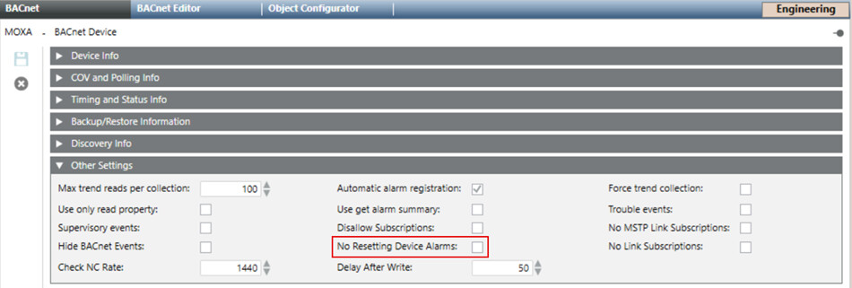

Troubleshooting notifications related to BACnet Alarm
Follow the below steps to receive notification regarding device failure, even after the driver restart.
- Navigate to ManagementView > FieldNetwork.
- Select a BACnet device from the system browser.
- Click BACnet tab and expand Other Settings.

- Check the No Resetting Device Alarms check-box.
- Click Save.
- You will receive notification related to BACnet device failure even after the driver restart.